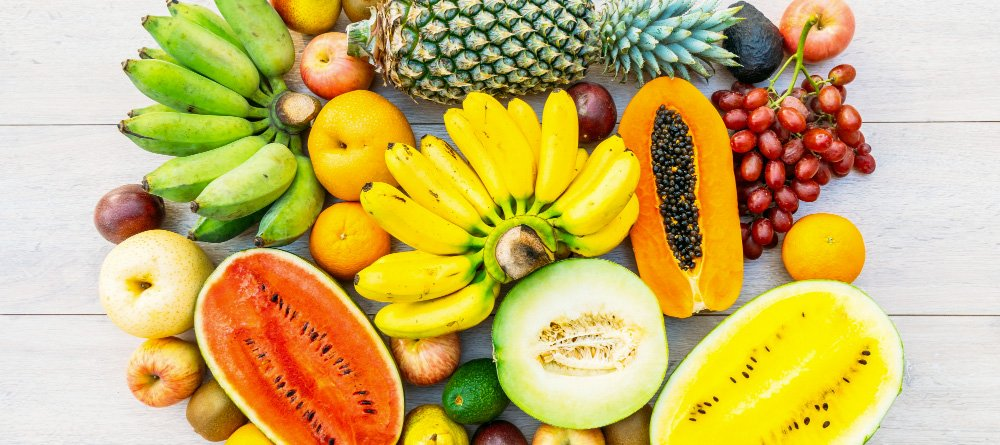

Fruta é um conceito culinário, por oposição ao de legume, um termo popular que em geral compreende os frutos, pseudofrutos e infrutescências comestíveis e de sabor adocicado que são comercializados, ainda que haja autores que discordem desta definição, por ser em suas opiniões, demasiado simplista.
